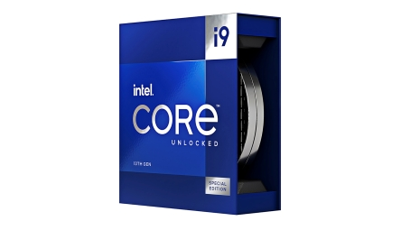

Novedades
-
Nuevo juego de Mario
Nintendo ha anunciado un nuevo juego de Mario para la Nintendo Switch. El juego se llama "Super Mario Bros Wonder" y se lanzará el 1 de Diciembre de 2023.
-
Nuevo software de edición de fotos
Adobe ha lanzado un nuevo software de edición de fotos llamado "Photoshop CC 2024". El software incluye nuevas funciones y mejoras, como un nuevo motor de procesamiento de imágenes, un nuevo panel de herramientas y un nuevo sistema de capas.
-

Nuevo procesador de Intel
Intel ha anunciado un nuevo procesador llamado "Core i9-13900K". El procesador tiene 24 núcleos y 32 subprocesos y funciona a una velocidad de reloj de hasta 5,5 GHz.